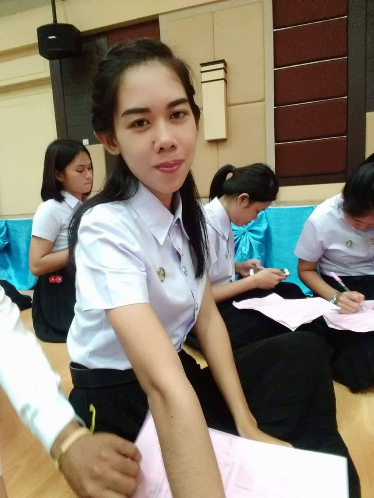

ประวัติข้อมูลส่วนตัว

นางสาวศิริยากร บัวยืน
ที่อยู่ปัจจบัน 229 หมู่ที่ 13 ตำบล ไร้ใต้
อำเภอพิบูลมังสาหาร จังหวัดอุบลราชธานี 34110
เบอร์โทรศัพท์ 093-774-9019
ข้อมูลส่วนตัว
วัน - เดือน - ปีเกิด 22 ตุลาคม 2539 อายุ 22 ปี
น้ำหนัก 45 กก. ส่วนสูง 168 ซ.ม.
สัญชาติ ไทย เชื้อชาติไทย
ศาสนา พุทธ สถานภาพ โสด สุขภาพ แข็งแรง
การศึกษา
- 2557 – 2559 ระดับมัธยมศึกษาตอนปลาย โรงเรียนไร่ใต้ประชาคม เกรดเฉลี่ย 2.49
- 2559 – ปัจจุบัน ระดับปริญญาตรี มหาวิทยาลัยราชภัฏอุบลราชธานี คณะเทคโนโลยีอุตสาหกรรม สาขาเทคโนโลยีคอมพิวเตอร์
เกรดเฉลี่ย 2.53
ประสบการณ์
- 2560 โครงการสำรวจข้อมูลผู้มีรายได้น้อยระบบบันทึกข้อมูล ภาคตะวันออกเฉียงเหนือ ตำแหน่งผู้บันทึกข้อมูล
- 2561 โครงการไทยนิยมยั่งยืน ตำแหน่งผู้บันทึกข้อมูล
ความรู้/ทักษะ
- สามารถใช้คอมพิวเตอร์โปรแกรม Visual studio,และโปรแกรม Microsoft Office ได้
ความสนใจพิเศษ
- สนใจด้านการซ่อมบำรุงคอมพิวเตอร์
- สนใจด้านการประกอบคอมพิวเตอร์
บุคคลอ้างอิง
- อาจารย์ศิริภิญญา อาสา ตำแหน่งอาจารย์ประจำสาขาเทคโนโลยีคอมพิวเตอร์ โทร.082-1375372
- อาจารย์ปิยภัทร โกษาพันธุ์ ตำแหน่งอาจารย์ประจำสาขาเทคโนโลยีคอมพิวเตอร์ โทร.088-081-1795
- อาจารย์ภัทรกิตติ ไชยสิงห์ ตำแหน่งอาจารย์ประจำสาขาเทคโนโลยีคอมพิวเตอร์ โทร.086-867-5646